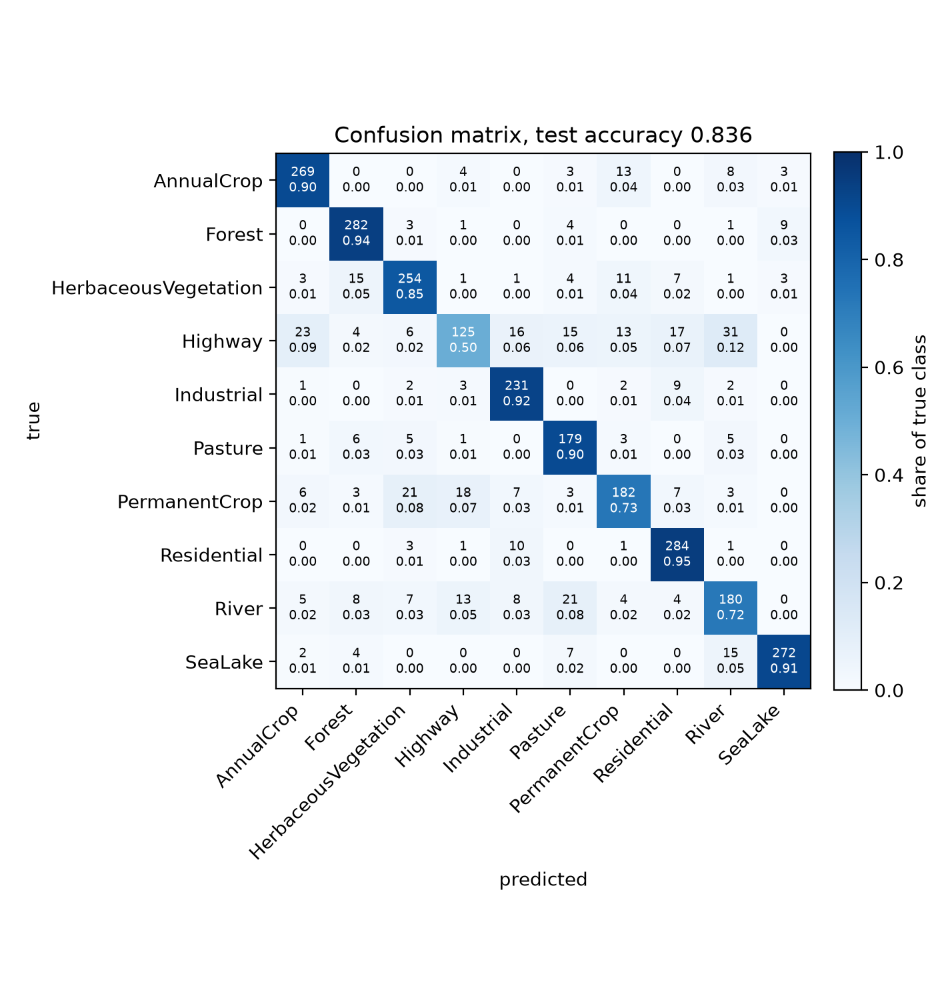
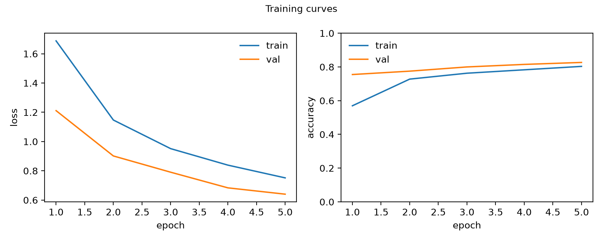
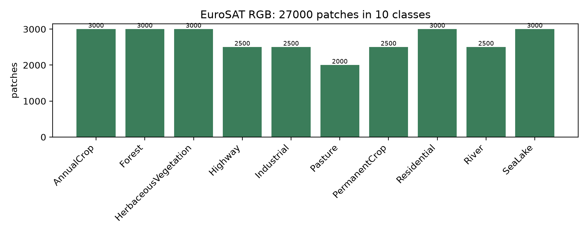
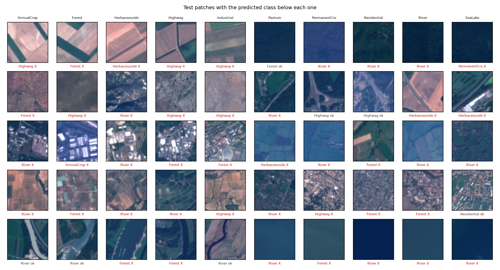

EuroSAT · satellite land cover classification
A frozen ImageNet ResNet-50 backbone with a trained head, built as a reproducible pipeline: download, split, train, evaluate, plot. One run on CPU produced every number on this page.
| Class | Precision | Recall | F1 | Support |
|---|---|---|---|---|
| AnnualCrop | 0.868 | 0.897 | 0.882 | 300 |
| Forest | 0.876 | 0.940 | 0.907 | 300 |
| HerbaceousVegetation | 0.844 | 0.847 | 0.845 | 300 |
| Highway | 0.749 | 0.500 | 0.600 | 250 |
| Industrial | 0.846 | 0.924 | 0.883 | 250 |
| Pasture | 0.759 | 0.895 | 0.821 | 200 |
| PermanentCrop | 0.795 | 0.728 | 0.760 | 250 |
| Residential | 0.866 | 0.947 | 0.905 | 300 |
| River | 0.729 | 0.720 | 0.724 | 250 |
| SeaLake | 0.948 | 0.907 | 0.927 | 300 |
Half of the Highway patches are labelled as another class, so Highway recall of 0.500 is
the dominant error mode. The physically overlapping classes are not the problem: HerbaceousVegetation
and Pasture reach F1 0.845 and 0.821, and the two crop classes separate cleanly enough that the
replanting distinction is learnable at this resolution.




ImageNet pretrained ResNet-50 with the convolutional backbone frozen, a fresh linear head trained for five epochs, batch size 16, Adam at 1e-4. 20,490 of 23,528,522 parameters are trainable.
27,000 labelled 64 by 64 patches split class stratified: 4,000 train, 600 validation, 2,700 test. Transforms are resize, tensor, ImageNet normalisation, with horizontal, vertical and 90 degree rotations.
Trained on CPU, no GPU available: 8,381 seconds with 4 threads. The intended fine tuning stage and full training set were omitted because a benchmark put them at roughly 67 hours.